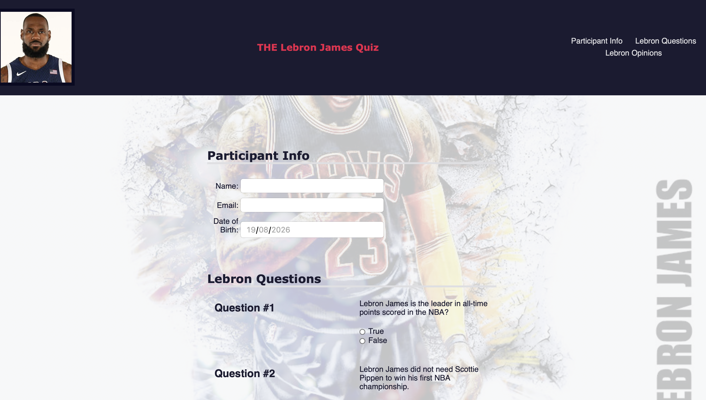

My Personal Portfolio
A responsive, accessible multi-page portfolio with project filtering, a dark visual system and lightweight interactions.
Selected work
A growing collection of research, programming and education work. Use the filters to explore by language or scope.
A responsive, accessible multi-page portfolio with project filtering, a dark visual system and lightweight interactions.

A simple, fun, and interactive quiz about Lebron James. It will test your knowledge of the greatest basketball player of all time (in my humble opinion).
Please note that this is a fun project and not meant to be taken seriously.
No projects match this filter yet.